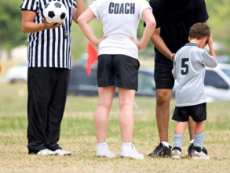
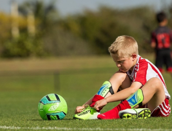

Are you new to soccer? We’ve got the best advice for first-time soccer parents.
Tucked away beside a bank in North Carolina sits the field where Kevin Carter’s involvement in soccer began. That’s where Carter watched his then 4-year-old daughter, Caroline, play her first recreational soccer game. Seeing her run around on the makeshift soccer field, he remembers the kids playing “bumble-bee ball,” with all of the players chasing the ball in one big mass of youngsters. For Carter, like many parents across the country, his first experience in soccer came when his child began playing the sport. Now, nearly 15 years after that first game — and several other matches for his daughter and son, John Robert — Carter is immersed in soccer. He went from first-time soccer parent to the Volunteer of the Year at South Carolina United Mount Pleasant, where he is currently on the Board of Directors. With his knowledge and experiences in youth soccer, Carter provided some insight on what parents who are new to the game can expect during their child’s first soccer season. Having the right expectations heading into your first few games is important, and Carter said the key is to remember youth soccer is about the kids and not the parents. As they head out to watch their kids begin playing, he said parents should realize that the youngest age groups feature a lot of volunteers. FREE US Youth Soccer Online Education Course: Parents Guide and Introduction to Soccer “Understand that it’s a learning process for everyone,” Carter said. “It’s a learning process for the kids, the coach, and the referees, as well. Exercise patience and understand everyone is there to have fun. If you keep that in the back of your mind, you’ll do the right thing.” Parents who aren’t familiar with all the rules of soccer can expect a slow process to fully understand the game if their child begins to play at young ages like 4 or 5. With those age groups using modified rules and playing small-sided games, where a smaller field is used with less than 11 players per team, the game is focused on introducing kids to the sport. It wasn’t until about five years after his daughter began playing that Carter said he began to pick up on a lot of the little intricacies of soccer. “She was 9 years old when I really started to understand a lot more of the rules of the game,” he said. “I didn’t get a lot of that information until I got to a higher level and it looked more like typical soccer.” There are a couple ways to learn more about soccer that benefits both parents and players, with one key being consistent communication between the coach and parents. Carter said communication with his daughter’s first coach was essentially limited to receiving a piece of paper with a schedule. After going through the process a couple times, he said it’s helpful to talk to the coach to see if there’s anything parents can do at home to help the child’s experience. At the youngest ages, that could mean working on the simplest skills. “A lot of kids get frustrated, so talking to the coach about activities they can do at home to make the game fun is a good idea,” Carter said. “You can do some fun training and some fun exercises at home. As my kids grew older and continued to be interested in the sport, I would work with the coaches at whatever level they were at, and we would do fun stuff in the yard at home.” A simple way to learn more about the tactics and rules of the game is to attend a soccer match or watch games on TV. Prior to his kids playing soccer, Carter had minimal experiences watching the game. His dorm in college at the University of North Carolina sat near the soccer field. He and his friends would occasionally watch some women’s games from a distance because they heard the team — led by Mia Hamm and Kristine Lilly — was supposed to be pretty good. But that was the extent of his soccer attendance. That has changed. He began watching the World Cup with his kids, and they’ve gone to several professional and college games. Carter says he’ll now watch English Premier League games on TV most weekends, and he believes watching soccer is a great way for parents and kids to educate themselves about the game. “If you watch soccer, you can learn a lot about rules and how players interact with each other,” Carter said. “I would definitely encourage going to games, especially for parents who don’t know the game the same way I didn’t know. The more I picked up on, the more I began enjoying it.” In the end, making sure everyone involved in youth soccer is enjoying their experience is the most important factor. And for the kids, the soccer experience isn’t limited to their time on the field. Parents need to be aware of the conversation in the car ride home and avoid critiquing what they saw at the game. The easiest way for parents to avoid that temptation — known to some as “station wagon syndrome” — is to remember all they need to tell their children is that they love to watch them play. Carter said parents must also avoid looking ahead and thinking about high school or college soccer when their child begins playing. He has seen kids with too much pressure lose interest in playing and drop the sport. Parents who are new to soccer should focus on the present and ensure the first soccer experience in a positive one for their child. “Be patient and keep the experience fun for everybody,” Carter said. “You don’t want to run coaches, referees or players away. It’s a game. It’s supposed to be fun.”
Recommended
10 Things Parents of Soccer Players Need to Know
Guide to Selecting the Right Pair of Soccer Shoes For Kids
What Equipment Does My Child Need to Play Soccer?